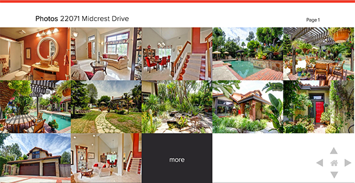
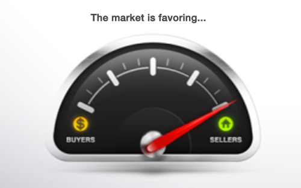

Welcome to the portfolio of
Derek Rush
Fullstack web developer using
Ruby and Javascript
My development toolset.
Ruby on Rails
Since building my first Rails application back in 2007 I have loved the beauty and simplicity of the Ruby language. One of my favorite features of Rails has to be size of its community thats builds gems and contributes to the Rails codebase itself. There seems to be a entire vibe that surrounds open source.
Node.js
Before Node.js even came around I was building full web applications in pure JS. I really love working with JS because its blazingly fast, and lightweight. I also really enjoy working with architectures centered around asynchronous JSON and small data end points.
As a matter of fact this site was built using Node.js, Express, and Gulp.
MongoDB
NoSQL document store, containing many different key-value pairs, or even nested documents.
GitHub
Collaboration, code review, and code management for open source and private projects.
SASS
SASS is an extension of CSS, adding nested rules, variables, mixins, and selector inheritance.
Postgres
PostgreSQL is a powerful, open source object-relational database system.
Gulp
Gulp is a streaming code-over-configuration build system for Node.js.
HTML5, HAML and Jade
Three ways to write structural markup for any interface.
I am a highly motivated web application developer, and designer with 9+ years of GUI experience and 7+ years working with Ruby on Rails and really intensive javascript.
History
-
2011 - 2016: W&R Studios
Over the span of several years I assisted in maintaining and launching 4 SAAS/Rails projects on a small agile team for the real estate industry. Most recently creating a custom front-end framework to consume a Rails JSON API.
2001 - 2007: Foldera
Co-founded a software company that was aimed to improve project management and collaboration. My role was Lead Designer/Usability Engineer.
Recent Projects
CloudMLX

Built a front-end framework, to search MLS's through a natural language search feature. Using complex REGEX patterns we autocomplete to match records and display results as the user types. We acheive this by leveraging the performance of JS's non blocking asynchronous nature for performance. Look for it soon.
CloudCMA
My first project at W&R, this is a online CMA geberator for real esate agents I added many features, such as the "Whats your home worth?" lead capturer, and the iPad version of cloudCMA. I was constantly working with every department to achieve this.
Nudge
Nudge was a very simple email system to clients about changes in the real estate market, tease upcoming listings or just send general digital promotional flyers. I worked on all aspects of this project including building all widget animations in javacript.